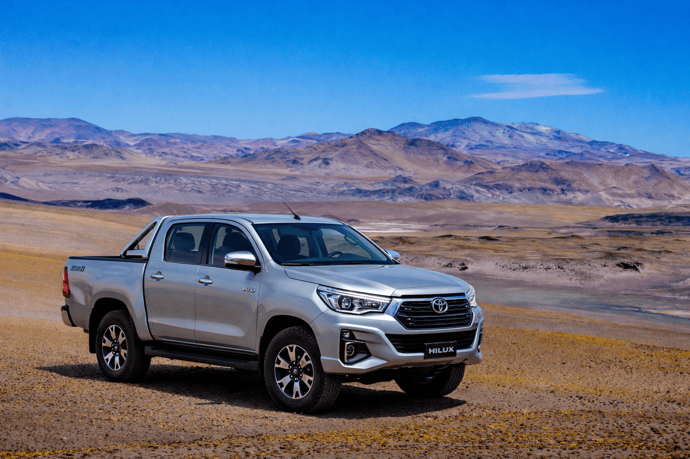
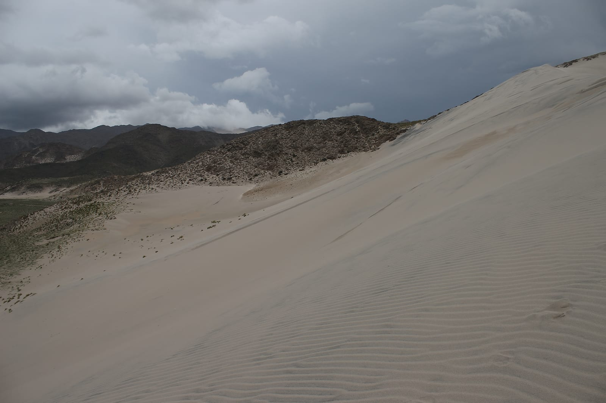

Mallku Experience 4x4
4 días explorando la Puna catamarcueña
Una aventura de 4 días por los paisajes más extremos y remotos del NOA: el Campo de Piedra Pómez, el Volcán Galán con la caldera más grande del mundo, sitios arqueológicos milenarios y las Ruinas de Shincal.

La experiencia
Mallku Experience 4x4 es nuestra expedición más ambiciosa: cuatro días recorriendo la Puna catamarcueña en vehículos 4x4, acompañados por guías baqueanos locales que conocen cada rincón de este territorio extremo.
Desde formaciones geológicas únicas en el planeta como el Campo de Piedra Pómez, hasta la caldera volcánica más grande del mundo en el Volcán Galán. Desde sitios arqueológicos de 10.000 años de antigüedad hasta la capital austral del Imperio Inca en Shincal.
Esta no es una excursión convencional. Es una inmersión profunda en uno de los paisajes más remotos y sobrecogedores de Argentina.
◆ ◆ ◆
- Quebrada de Belén
- Puerto Viejo
- Duna de Randolfo
- Reserva de la Biosfera de Laguna Blanca
- Mirador Pasto Ventura
- El Peñón (almuerzo)
- Mirador Volcán Carachi
- Recorrido lava volcánica Volcán Carachi
- Laguna Carachi
- Campo de Olas
- Campo de Piedra Pómez (40 min libres)
Noche: Antofagasta de la Sierra



- Volcán Antofagasta (trekking opcional)
- Puraca
- Confluencia
- El Coiparcito
- Sitio Arqueológico Punta La Peña
- Sitio Arqueológico Peñas Coloradas
Noche: Antofagasta de la Sierra
◆ ◆ ◆
- Campo de Tobas
- Cañón de Mirihuaca
- Real Grande
- Cañón de Real Grande
- Ojos de Pirica
- Mirador Borde Oeste Volcán Galán
- Laguna Diamante
- Géiseres Volcán Galán
- Mirador Borde Sur — Lagunas Pabellón y Laguna Negra
- Laguna Grande
- Laguna Cavi
- Campo Vicuñaro
- El Peñón
- Mirador Cerro La Herradura
- Mirador Volcanes Antofagasta-Alumbrera
Noche: Antofagasta de la Sierra — Cena de despedida incluida (asado autóctono o trucha)
◆ ◆ ◆
- Viaje de regreso a Belén
- Almuerzo en Belén
- Ruinas de Shincal (turno tarde)
◆ ◆ ◆
Incluido / No incluido
Incluye
- ✓ Transporte en vehículo 4x4 durante los 4 días
- ✓ Guía baqueano local especializado
- ✓ Todas las excursiones detalladas en el itinerario
- ✓ Entradas a sitios arqueológicos
- ✓ Cena de despedida (Día 3)
- ✓ Seguro de responsabilidad civil
No incluye
- ✗ Alojamiento en Antofagasta de la Sierra (3 noches)
- ✗ Comidas no mencionadas (desayunos, almuerzos)
- ✗ Traslado hasta Belén
- ✗ Propinas (opcionales)
- ✗ Gastos personales
Recomendaciones
→ Llevar agua en cantidad (mínimo 2 litros por día)
→ Ropa en capas: hace frío por la mañana y calor al mediodía
→ Abrigo liviano pero efectivo (viento en altura)
→ Sombrero o gorra y protector solar (radiación UV extrema)
→ Anteojos de sol con buen filtro
→ Calzado cómodo y cerrado para caminar
→ Mate cebado si querés (opcional)
→ Medicación para altura si tenés antecedentes
→ Cámara de fotos con batería extra (el frío las agota rápido)
◆ ◆ ◆
Información práctica
Punto de encuentro
La experiencia comienza y termina en Belén, Catamarca. Podés llegar en auto, colectivo o avión hasta Catamarca capital y luego transporte terrestre.
Alojamiento
Las 3 noches son en Antofagasta de la Sierra. Hay opciones de hostería y cabañas. Te ayudamos a coordinar la reserva.
Clima
Clima de altura: días soleados con viento, noches frías (pueden bajar de 0°C). Amplitud térmica extrema. Llevá ropa en capas.
Operador local
Trabajamos con Aventura Extrema Catamarca, guías baqueanos con años de experiencia en la Puna.
¿Listo para la aventura más extrema del NOA?
Escribinos y te contamos todo sobre la próxima salida. Grupos reducidos, cupos limitados. 4 días que no vas a olvidar.
+54 9 3815 70-2549
WhatsApp · mallkuexcursiones@gmail.com